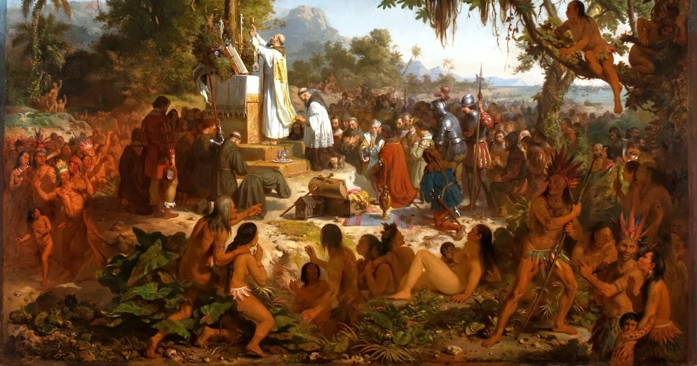

Em Portugal o Quinhentismo se manifestou em uma produção literária voltada à expressão clássica, obras essas que retomavam as temáticas e estéticas gregas e romanas clássicas, seguindo os moldes renascentistas que eram populares na Europa daquela época.
Já no Brasil, o Quinhentismo se refere ao conjunto de textos e autores do período da conquista do solo brasileiro pelos portugueses, se extendendo até o final do século 16. Ele teve duas vertentes: a Literatura de Informação e a Literatura de Catequese
-Literatura de Informação: Foram os primeiros textos escritos no Brasil - que inauguraram assim o Quinhentismo no país - e tinham a função de registrar a colonização do país, sendo compostos de informações fornecidas por viajantes e missionários portugueses, que tratavam sobre tudo que encontravam naquelas novas e desconhecidas terras. Esses textos, apesar de parecerem apenas simples registros, foram posteriormentes utilizados por outros escritores como inspiração para criar uma literatura de identidade verdadeiramente brasileira.

-Literatura de Catequese: Durante a mesma época da Literatura de Informação, também surgiu a Literatura de Catequese, composta de textos de caráter catequizador. Esta outra vertente era caracterizada por textos com uma função pedagógica e educacional produzidos pelos jesuítas, que eram padres católicos e missionários que vinham Portugal com a chamada Companhia de Jesus, e eles tinham a missão de catequizar os indígenas. Para concluir e facilitar a sua missão de converter os nativos, eles produziram diversas obras pedagógicas incluindo cartas, crônicas e poemas. Esses textos marcam a difusão do catolicismo no Brasil e diferentemente da Literatura de Informação, eles tinham uma preocupação com a estética, que servia para ajudar na compreensão de conceitos religiosos para os indígenas e a passar a mensagem de uma forma mais clara.
